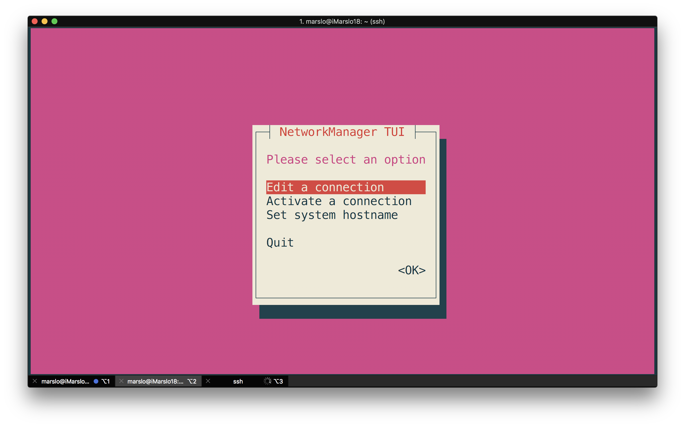

Table of Contents generated with DocToc
interface
change interface name
Permanent Solution
$ sudo touch /etc/udev/rules.d/10-network.rules
$ sudo bash -c "cat > /etc/udev/rules.d/10-network.rules" << EOF
SUBSYSTEM=="net", ACTION=="add", DRIVERS=="?*", ATTR{address}=="<INTERFACE_MAC_ADDRESS>", KERNEL=="<ORIGINAL_INTERFACE_NAME>", NAME="<NEW_INTERFACE_NAME>"
EOF
e.g.:
$ nmcli connection NAME UUID TYPE DEVICE WLAN-PUB 2cde1f25-8c28-4318-9781-b9fcdabd985d wifi wlp2s0 Wired connection 1 f72d569d-065b-3bc8-98ae-e07f8bf46945 ethernet enp0s31f6 cni0 dcfc10c6-5421-4405-9d56-b3bb595780f5 bridge cni0 docker0 29822e8f-772f-4e67-8052-55b9e6c9e298 bridge docker0 $ sudo bash -c "cat > /etc/udev/rules.d/10-network.rules" << EOF SUBSYSTEM=="net", ACTION=="add", DRIVERS=="?*", ATTR{address}=="30:e1:71:95:19:bc", NAME="eth0" SUBSYSTEM=="net", ACTION=="add", DRIVERS=="?*", ATTR{address}=="34:f3:9a:52:75:65", NAME="wlan0" EOF $ sudo reboot $ nmcli connection NAME UUID TYPE DEVICE WLAN-PUB 2cde1f25-8c28-4318-9781-b9fcdabd985d wifi wlan0 Wired connection 1 f72d569d-065b-3bc8-98ae-e07f8bf46945 ethernet eth0 cni0 9a2d48d7-e1c7-4fe4-a164-ffde9716dbf3 bridge cni0 docker0 5db99dac-d17d-4765-9f38-057ff2c853ff bridge docker0
temporary Solution
$ sudo ifconfig <ORIGINAL_INTERFACE_NAME> down
$ sudo ip link set <ORIGINAL_INTERFACE_NAME> name <NEW_INTERFACE_NAME>
$ sudo ifconfig <NEW_INTERFACE_NAME>
e.g.:
$ nmcli dev DEVICE TYPE STATE CONNECTION wlp2s0 wifi connected WLAN-PUB cni0 bridge connected cni0 enp0s31f6 ethernet connected Wired connection 1 docker0 bridge connected docker0 flannel.1 vxlan disconnected -- veth1890b284 ethernet unmanaged -- veth5145289b ethernet unmanaged -- vetha9ee773c ethernet unmanaged -- vethf5a48bb2 ethernet unmanaged -- lo loopback unmanaged -- $ nmcli connection NAME UUID TYPE DEVICE WLAN-PUB 2cde1f25-8c28-4318-9781-b9fcdabd985d wifi wlp2s0 Wired connection 1 f72d569d-065b-3bc8-98ae-e07f8bf46945 ethernet enp0s31f6 cni0 dcfc10c6-5421-4405-9d56-b3bb595780f5 bridge cni0 docker0 29822e8f-772f-4e67-8052-55b9e6c9e298 bridge docker0 $ sudo ifconfig enp0s31f6 down; sudo ip link set enp0s31f6 name eth0; sudo ifconfig eth0 up $ nmcli dev DEVICE TYPE STATE CONNECTION wlp2s0 wifi connected WLAN-PUB cni0 bridge connected cni0 docker0 bridge connected docker0 eth0 ethernet connected Wired connection 1 flannel.1 vxlan disconnected -- veth1890b284 ethernet unmanaged -- veth5145289b ethernet unmanaged -- vetha9ee773c ethernet unmanaged -- vethf5a48bb2 ethernet unmanaged -- lo loopback unmanaged -- $ nmcli connection NAME UUID TYPE DEVICE WLAN-PUB 2cde1f25-8c28-4318-9781-b9fcdabd985d wifi wlp2s0 Wired connection 1 f72d569d-065b-3bc8-98ae-e07f8bf46945 ethernet eth0 cni0 e557e9bc-754e-4dc9-b9db-4519a7b15c33 bridge cni0 docker0 47c195b8-4867-40d3-acec-c28223e2b013 bridge docker0
show
ethtool
$ sudo ethtool eth0
Settings for eth0:
Supported ports: [ TP ]
Supported link modes: 10baseT/Half 10baseT/Full
100baseT/Half 100baseT/Full
1000baseT/Full
Supported pause frame use: No
Supports auto-negotiation: Yes
Supported FEC modes: Not reported
Advertised link modes: 10baseT/Half 10baseT/Full
100baseT/Half 100baseT/Full
1000baseT/Full
Advertised pause frame use: No
Advertised auto-negotiation: Yes
Advertised FEC modes: Not reported
Speed: 100Mb/s
Duplex: Full
Port: Twisted Pair
PHYAD: 1
Transceiver: internal
Auto-negotiation: on
MDI-X: on (auto)
Supports Wake-on: pumbg
Wake-on: g
Current message level: 0x00000007 (7)
drv probe link
Link detected: yes
list hardware
$ sudo lshw -class network
*-network
description: Wireless interface
product: Wireless 8260
vendor: Intel Corporation
physical id: 0
bus info: pci@0000:02:00.0
logical name: wlan0
version: 3a
serial: 34:f3:9a:52:75:65
width: 64 bits
clock: 33MHz
capabilities: pm msi pciexpress bus_master cap_list ethernet physical wireless
configuration: broadcast=yes driver=iwlwifi driverversion=4.15.0-23-generic firmware=34.0.1 ip=192.168.10.235 latency=0 link=yes multicast=yes wireless=IEEE 802.11
resources: irq:129 memory:e4100000-e4101fff
*-network
description: Ethernet interface
product: Ethernet Connection (2) I219-LM
vendor: Intel Corporation
physical id: 1f.6
bus info: pci@0000:00:1f.6
logical name: eth0
version: 31
serial: 30:e1:71:95:19:bc
size: 100Mbit/s
capacity: 1Gbit/s
width: 32 bits
clock: 33MHz
capabilities: pm msi bus_master cap_list ethernet physical tp 10bt 10bt-fd 100bt 100bt-fd 1000bt-fd autonegotiation
configuration: autonegotiation=on broadcast=yes driver=e1000e driverversion=3.2.6-k duplex=full firmware=0.8-4 ip=130.147.182.57 latency=0 link=yes multicast=yes port=twisted pair speed=100Mbit/s
resources: irq:127 memory:e4300000-e431ffff
*-network:0
description: Ethernet interface
physical id: 2
logical name: veth680e7b1b
serial: 86:86:ae:b1:3f:c3
size: 10Gbit/s
capabilities: ethernet physical
configuration: autonegotiation=off broadcast=yes driver=veth driverversion=1.0 duplex=full link=yes multicast=yes port=twisted pair speed=10Gbit/s
*-network:1
description: Ethernet interface
physical id: 3
logical name: vethdd057c06
serial: ae:b1:42:e3:30:d0
size: 10Gbit/s
capabilities: ethernet physical
configuration: autonegotiation=off broadcast=yes driver=veth driverversion=1.0 duplex=full link=yes multicast=yes port=twisted pair speed=10Gbit/s
*-network:2
description: Ethernet interface
physical id: 4
logical name: vethfe693595
serial: 16:ec:cd:4e:c3:d8
size: 10Gbit/s
capabilities: ethernet physical
configuration: autonegotiation=off broadcast=yes driver=veth driverversion=1.0 duplex=full link=yes multicast=yes port=twisted pair speed=10Gbit/s
*-network:3
description: Ethernet interface
physical id: 5
logical name: flannel.1
serial: 2a:2b:77:a7:35:8f
capabilities: ethernet physical
configuration: broadcast=yes driver=vxlan driverversion=0.1 ip=10.244.0.0 link=yes multicast=yes
*-network:4
description: Ethernet interface
physical id: 6
logical name: cni0
serial: 0a:58:0a:f4:00:01
capabilities: ethernet physical
configuration: broadcast=yes driver=bridge driverversion=2.3 firmware=N/A ip=10.244.0.1 link=yes multicast=yes
*-network:5
description: Ethernet interface
physical id: 7
logical name: docker0
serial: 02:42:99:41:e5:02
capabilities: ethernet physical
configuration: broadcast=yes driver=bridge driverversion=2.3 firmware=N/A ip=172.17.0.1 link=no multicast=yes
*-network:6
description: Ethernet interface
physical id: 8
logical name: vethc1b38134
serial: 76:6a:6c:0f:e8:a1
size: 10Gbit/s
capabilities: ethernet physical
configuration: autonegotiation=off broadcast=yes driver=veth driverversion=1.0 duplex=full link=yes multicast=yes port=twisted pair speed=10Gbit/s
route
$ nslookup my.gitlab.company.com
Server: 130.147.236.5
Address: 130.147.236.5#53
Non-authoritative answer:
Name: pww.gitlab.cdi.mycompany.com
Address: 130.147.219.15
$ $ ip route get 130.147.219.15
130.147.219.15 dev eno1 src 130.147.182.240 uid 1000
cache
$ nslookup github.com
Server: 130.147.236.5
Address: 130.147.236.5#53
Non-authoritative answer:
Name: github.com
Address: 192.30.253.112
Name: github.com
Address: 192.30.253.113
$ ip route get 192.30.253.113
192.30.253.113 via 192.168.10.1 dev wlan0 src 192.168.11.166 uid 1000
cache
or
$ ip route show default via 192.168.10.1 dev wlan0 proto dhcp metric 600 10.244.0.0/24 dev cni0 proto kernel scope link src 10.244.0.1 130.140.0.0/16 dev eth0 scope link 130.145.0.0/16 dev eth0 scope link 130.146.0.0/16 dev eth0 scope link 130.147.0.0/16 dev eth0 scope link 130.147.182.0/23 dev eth0 proto kernel scope link src 130.147.182.57 metric 100 137.55.0.0/16 dev eth0 scope link 161.83.0.0/16 dev eth0 scope link 161.84.0.0/16 dev eth0 scope link 161.85.0.0/16 dev eth0 scope link 161.88.0.0/16 dev eth0 scope link 161.91.0.0/16 dev eth0 scope link 161.92.0.0/16 dev eth0 scope link 169.254.0.0/16 dev eth0 scope link metric 1000 172.17.0.0/16 dev docker0 proto kernel scope link src 172.17.0.1 linkdown 185.166.0.0/16 dev eth0 scope link 192.168.10.0/23 dev wlan0 proto kernel scope link src 192.168.10.235 metric 600or
$ route -n Kernel IP routing table Destination Gateway Genmask Flags Metric Ref Use Iface 0.0.0.0 192.168.10.1 0.0.0.0 UG 600 0 0 wlan0 10.244.0.0 0.0.0.0 255.255.255.0 U 0 0 0 cni0 130.140.0.0 0.0.0.0 255.255.0.0 U 0 0 0 eth0 130.145.0.0 0.0.0.0 255.255.0.0 U 0 0 0 eth0 130.146.0.0 0.0.0.0 255.255.0.0 U 0 0 0 eth0 130.147.0.0 0.0.0.0 255.255.0.0 U 0 0 0 eth0 130.147.182.0 0.0.0.0 255.255.254.0 U 100 0 0 eth0 137.55.0.0 0.0.0.0 255.255.0.0 U 0 0 0 eth0 161.83.0.0 0.0.0.0 255.255.0.0 U 0 0 0 eth0 161.84.0.0 0.0.0.0 255.255.0.0 U 0 0 0 eth0 161.85.0.0 0.0.0.0 255.255.0.0 U 0 0 0 eth0 161.88.0.0 0.0.0.0 255.255.0.0 U 0 0 0 eth0 161.91.0.0 0.0.0.0 255.255.0.0 U 0 0 0 eth0 161.92.0.0 0.0.0.0 255.255.0.0 U 0 0 0 eth0 169.254.0.0 0.0.0.0 255.255.0.0 U 1000 0 0 eth0 172.17.0.0 0.0.0.0 255.255.0.0 U 0 0 0 docker0 185.166.0.0 0.0.0.0 255.255.0.0 U 0 0 0 eth0 192.168.10.0 0.0.0.0 255.255.254.0 U 600 0 0 wlan0
DNS
add new DNS permanently
$ sudo apt install resolvconf
$ sudo cp /etc/resolvconf/resolv.conf.d/head{,.org}
$ sudo bash -c "cat > /etc/resolvconf/resolv.conf.d/head" << EOF
nameserver 130.147.236.5
nameserver 161.92.35.78
search cn-132.lan.mycompany.com
EOF
$ sudo resolvconf -u
$ cat /etc/resolv.conf
nameserver 127.0.0.53
$ sudo resolvconf -u
$ cat /etc/resolv.conf
nameserver 130.147.236.5
nameserver 161.92.35.78
nameserver 127.0.0.53
search cn-132.lan.mycompany.com
Port Redirection
$ sudo iptables -L -n
Chain INPUT (policy ACCEPT)
target prot opt source destination
Chain FORWARD (policy ACCEPT)
target prot opt source destination
Chain OUTPUT (policy ACCEPT)
target prot opt source destination
$ sudo iptables -I INPUT 1 -p tcp --dport 8080 -j ACCEPT
$ sudo iptables -I INPUT 1 -p tcp --dport 80 -j ACCEPT
$ sudo iptables -A PREROUTING -t nat -i ens32 -p tcp --dport 80 -j REDIRECT --to-port 8080
$ sudo iptables -t nat -I OUTPUT -p tcp -d 127.0.0.1 --dport 80 -j REDIRECT --to-ports 8080
$ sudo iptables -t nat -I OUTPUT -p tcp -o lo --dport 80 -j REDIRECT --to-ports 8080
$ sudo iptables -L -n
Chain INPUT (policy ACCEPT)
target prot opt source destination
ACCEPT tcp -- 0.0.0.0/0 0.0.0.0/0 tcp dpt:80
ACCEPT tcp -- 0.0.0.0/0 0.0.0.0/0 tcp dpt:8080
Chain FORWARD (policy ACCEPT)
target prot opt source destination
Chain OUTPUT (policy ACCEPT)
target prot opt source destination
$ sudo netfilter-persistent save
run-parts: executing /usr/share/netfilter-persistent/plugins.d/15-ip4tables save
run-parts: executing /usr/share/netfilter-persistent/plugins.d/25-ip6tables save
$ sudo iptables-save > /etc/iptables/rules.v4
proxy setup
- Name:
x.x.x.x - Port:
80 - Settings
$ grep proxy /etc/profile
export http_proxy=x.x.x.x:80
export https_proxy=x.x.x.x:80
export no_proxy=localhost,127.0.0.1,*.google.com
network speed
$ ifstat -n -i en7
en7
KB/s in KB/s out
7.35 1.15
4.91 1.02
6.05 0.80
8.36 1.78
wifi
iwconfig
installation
$ sudo apt install wireless-toolsget wireless card
$ WIRELESSCARD="$(iwconfig 2>/dev/null | /bin/grep ESSID | awk -F' ' '{print $1}')" $ iwconfig 2>/dev/null | \grep ESSID wlx24050f15c19b IEEE 802.11 ESSID:"MERCURY_07FA"wireless network details
$ sudo iwlist scan docker0 Interface doesn't support scanning. eno1 Interface doesn't support scanning. lo Interface doesn't support scanning. cni0 Interface doesn't support scanning. flannel.1 Interface doesnt support scanning. wlx24050f15c19b Scan completed : Cell 01 - Address: 50:3A:A0:CB:07:FA Channel:1 Frequency:2.412 GHz (Channel 1) Quality=55/70 Signal level=-55 dBm Encryption key:on ESSID:"MERCURY_07FA" Bit Rates:1 Mb/s; 2 Mb/s; 5.5 Mb/s; 11 Mb/s; 9 Mb/s 18 Mb/s; 36 Mb/s; 54 Mb/s Bit Rates:6 Mb/s; 12 Mb/s; 24 Mb/s; 48 Mb/s Mode:Master ...or
$ nmcli --show-secrets connection show 'MERCURY_07FA' connection.id: MERCURY_07FA connection.uuid: 8e362f4a-d3a3-4147-b31e-4519954b55ef connection.stable-id: -- connection.type: 802-11-wireless connection.interface-name: -- connection.autoconnect: yes connection.autoconnect-priority: 0 connection.autoconnect-retries: -1 (default) connection.auth-retries: -1 connection.timestamp: 1530689982 connection.read-only: no ...
nmcli

- show available wifi
$ sudo nmcli device wifi rescan $ nmcli dev wifi list IN-USE SSID MODE CHAN RATE SIGNAL BARS SECURITY CDI_TP-LINK Infra 11 405 Mbit/s 100 ▂▄▆█ WPA1 WPA2 TP-LINK_CDI Infra 1 270 Mbit/s 82 ▂▄▆█ WPA1 WPA2 WLAN-PUB Infra 4 54 Mbit/s 82 ▂▄▆█ WPA1 WPA2 HiWiFi_Pins Infra 7 270 Mbit/s 82 ▂▄▆█ WPA1 WPA2 -- Infra 1 54 Mbit/s 59 ▂▄▆_ -- * MERCURY_07FA Infra 1 270 Mbit/s 55 ▂▄__ WPA1 WPA2 Automation-Local Infra 9 195 Mbit/s 55 ▂▄__ WPA2 ChinaUnicom Infra 1 54 Mbit/s 42 ▂▄__ -- 61-PUB Infra 1 270 Mbit/s 29 ▂___ WPA2 HC_Guest Infra 6 405 Mbit/s 29 ▂___ WPA1 WPA2 HuaCloud_AP Infra 6 405 Mbit/s 29 ▂___ WPA1 WPA2 56qq-guest Infra 6 195 Mbit/s 25 ▂___ WPA2 56qq-sec Infra 1 195 Mbit/s 22 ▂___ WPA2 802.1X 56qq-guest Infra 1 195 Mbit/s 22 ▂___ WPA2 HCB Infra 1 195 Mbit/s 19 ▂___ WPA2 802.1X
- show saved wifi list
$ nmcli c ( = $ nmcli connection) NAME UUID TYPE DEVICE WLAN-PUB 545d5d95-723f-4e1b-b764-8e9bd2fe6a9f wifi wlp2s0 Wired connection 1 a2a10a61-4519-3380-9301-c6e2a592eaa7 ethernet enp0s31f6 CDI_TP-LINK_5G cb00cf00-58ca-4668-9b4c-e1fb3b18c932 wifi --
nmtui
